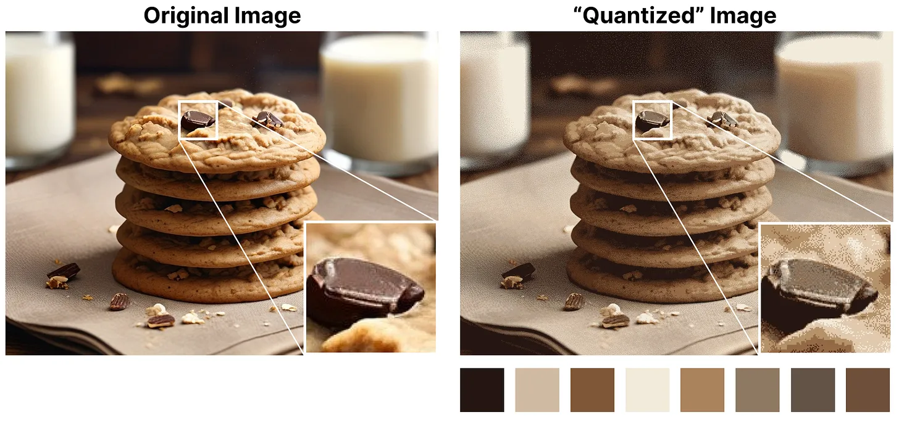
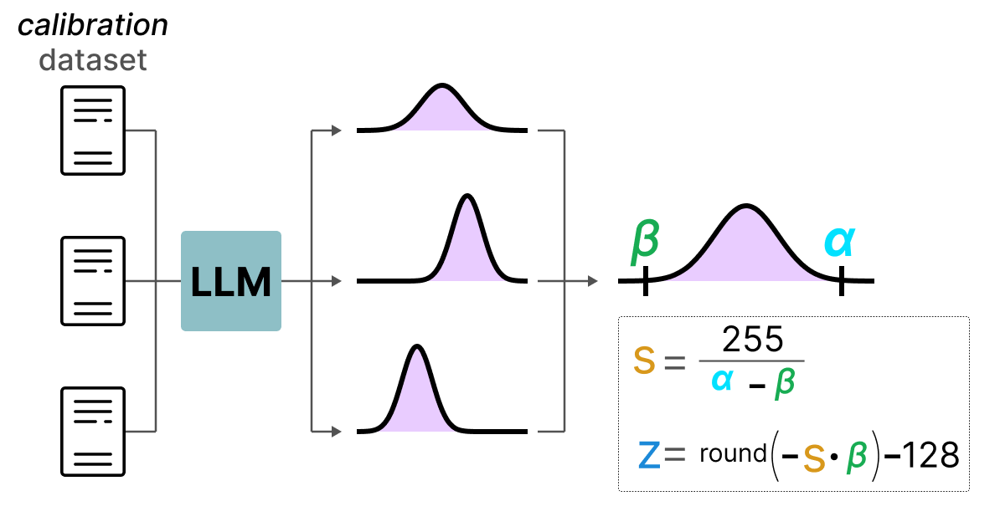
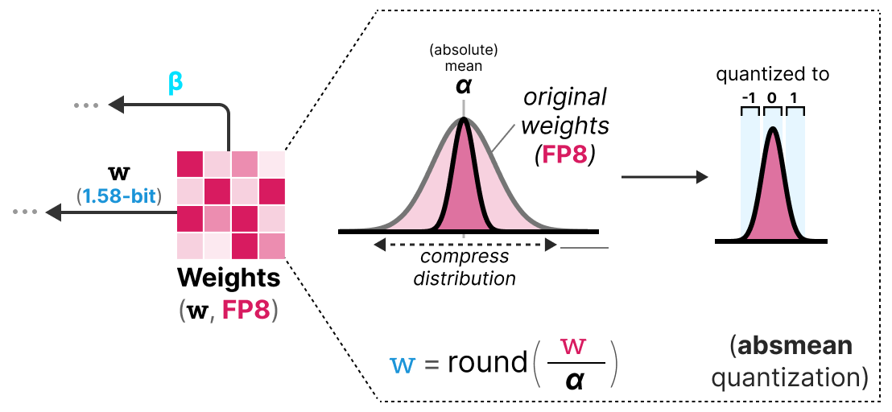

Cuantización#
Los modelos de Deep Learning se están volviendo cada vez más potentes y voluminosos. Tomemos como ejemplo los LLM (Large Language Models): los mejores modelos de código abierto, como Llama 3.1, ahora tienen cientos de miles de millones de parámetros.
Cargar un modelo así en una sola GPU es imposible. Incluso con la GPU más potente del mercado (H100, con 80 GB de VRAM), se necesitan varias GPU para la inferencia y aún más para el entrenamiento.
En la práctica, se observa que cuanto más parámetros tiene un modelo, mejores son sus resultados. Por lo tanto, no queremos reducir el tamaño de los modelos. Sin embargo, buscamos disminuir el espacio de memoria que ocupan.
Este curso se inspira fuertemente en dos artículos: una guía visual sobre la cuantización y una explicación detallada de QLoRA. Las imágenes utilizadas también provienen de estos dos artículos.
¿Cómo representar los números en una computadora?#
Para representar los números de punto flotante en una computadora, se utiliza un cierto número de bits. La norma IEEE 754 describe cómo los bits pueden representar un número. Esto se hace mediante tres partes: el signo, el exponente y la mantisa.
Aquí tienes un ejemplo de representación FP16 (16 bits):
El signo determina el signo del número, el exponente da los dígitos antes del punto decimal y la mantisa los dígitos después del punto decimal. Aquí tienes un ejemplo en imagen de cómo convertir la representación FP16 a un número.

En general, cuanto más bits se utilizan para representar un valor, más preciso puede ser o cubrir un rango más amplio de valores. Por ejemplo, podemos comparar la precisión FP16 y FP32:

Una última cosa importante a saber: hay dos formas de evaluar una representación. Por un lado, el rango dinámico que indica el rango de valores que se pueden representar, y la precisión que describe la diferencia entre dos valores cercanos.
Cuanto mayor es el exponente, mayor es el rango dinámico, y cuanto mayor es la mantisa, mayor es la precisión (por lo tanto, dos valores cercanos son cercanos).
En el aprendizaje profundo, a menudo preferimos usar la representación BF16 en lugar de FP16. La representación BF16 tiene un exponente más grande pero una precisión más baja.
La figura siguiente ilustra las diferencias:

Ahora que entendemos los conceptos de precisión de los números de punto flotante, podemos calcular el espacio que ocupa un modelo en memoria según la precisión. En FP32, un número se representa con 32 bits, lo que equivale a 4 bytes (un byte vale 8 bits). Para obtener el uso de memoria de un modelo, podemos hacer el siguiente cálculo: \(memory= \frac{n_{bits}}{8}*n_{params}\)
Tomemos el ejemplo de un modelo de 70 mil millones de parámetros a diferentes niveles de precisión: doble (FP64), full-precision (FP32) y half-precision (FP16). Para FP64: \(\frac{64}{8} \times 70B = 560GB\) Para FP32: \(\frac{32}{8} \times 70B = 280GB\) Para FP16: \(\frac{16}{8} \times 70B = 140GB\)
Nos damos cuenta de que es necesario encontrar una manera de reducir el tamaño de los modelos. Aquí, incluso el modelo en half-precision ocupa 140 GB, lo que equivale a 2 GPU H100.
Nota: Aquí hablamos de la precisión para la inferencia. Para el entrenamiento, como hay que mantener las activaciones en memoria para el descenso de gradiente, terminamos con muchos más parámetros (ver parte sobre QLoRA más adelante en el curso).
Introducción a la cuantización#
El objetivo de la cuantización es reducir la precisión de un modelo pasando de una precisión alta como FP32 a una precisión más baja como INT8.
Nota: INT8 es la forma de representar enteros de -127 a 127 en 8 bits.

Por supuesto, al reducir el número de bits para representar los valores, perdemos precisión. Para ilustrar esto, veamos una imagen:

Notamos un “grano” en la imagen, debido a la falta de colores disponibles para representarla. Lo que queremos es reducir el número de bits para representar la imagen mientras conservamos al máximo la precisión de la imagen original.
Existen varias formas de hacer cuantización: la cuantización simétrica y la cuantización asimétrica.
Punto rápido sobre las precisiones comunes#
FP16: La precisión y el rango dinámico disminuyen en comparación con FP32.

BF16: La precisión disminuye fuertemente, pero el rango dinámico se mantiene igual en comparación con FP32.

INT8: Pasamos a una representación en entero.

Cuantización simétrica#
En el caso de la cuantización simétrica, el rango de valores de nuestros flotantes originales se mapea de manera simétrica en el rango de valores de cuantización. Esto significa que el 0 en los flotantes se mapea en el 0 en la precisión de cuantización.

Una de las formas más comunes y simples de realizar esta operación es usar el método absmax (cuantización de máximo absoluto). Tomamos el valor máximo (en valor absoluto) y realizamos el mapeo en relación con este valor:

La fórmula es bastante básica: consideremos \(b\) el número de bytes que queremos cuantizar, \(\alpha\) el valor absoluto más grande. Entonces podemos calcular el factor de escala de la siguiente manera: \(s=\frac{2^{b-1}-1}{\alpha}\) Luego podemos realizar la cuantización de \(x\) de esta manera: \(x_{quantized}=round(s \times x)\) Para desquantizar y recuperar un valor FP32, podemos hacerlo así: \(x_{dequantized}=\frac{x_{quantized}}{s}\)
Por supuesto, el valor desquantizado no será equivalente al valor antes de la cuantización:

y podemos cuantizar los errores de cuantización:
Cuantización asimétrica#
A diferencia de la cuantización simétrica, la cuantización asimétrica no es simétrica alrededor de 0. En su lugar, mapeamos el mínimo \(\beta\) y el máximo \(\alpha\) del rango de los flotantes originales al mínimo y máximo del rango cuantizado. El método más común para esto se llama cuantización de punto cero.

Con este método, el 0 ha cambiado de posición, por eso este método se llama asimétrico.
Como el 0 ha sido desplazado, necesitamos calcular la posición del 0 (punto cero) para realizar el mapeo lineal.
Podemos cuantizar de la siguiente manera: \(s=\frac{128 - - 127}{\alpha- \beta}\) Calculamos el punto cero: \(z=round(-s \times \beta)-2^{b-1}\) y: \(x_{quantized}=round(s \times x + z)\) Para desquantizar, podemos aplicar la siguiente fórmula: \(x_{dequantized}=\frac{x_{quantized}-z}{s}\)
Ambos métodos tienen sus ventajas y desventajas, podemos compararlos mirando el comportamiento en un \(x\) cualquiera:

Recorte y modificación de rango#
Los métodos que hemos presentado tienen un defecto mayor. Estos métodos no son en absoluto robustos a los valores atípicos. Imaginemos que nuestro vector \(x\) contiene los siguientes valores: [-0.59, -0.21, -0.07, 0.13, 0.28, 0.57, 256]. Si hacemos nuestro mapeo habitual, obtendremos valores idénticos para todos los elementos excepto para el valor atípico (256):

Esto es muy problemático porque la pérdida de información es colosal.
En la práctica, podemos decidir recortar ciertos valores para disminuir el rango en el espacio de los flotantes (antes de aplicar la cuantización). Por ejemplo, podríamos decidir limitar los valores en el rango [-5,5] y todos los valores fuera de este rango se mapearán a los valores máximos o mínimos de cuantización (127 o -127 para INT8):

Al hacer esto, reducimos enormemente el error en los no-valores atípicos pero lo aumentamos para los valores atípicos (lo que también puede ser problemático).
Calibración#
En la parte anterior, usamos arbitrariamente un rango de valores de [-5,5]. La selección de este rango de valores no es aleatoria y está determinada por un método llamado calibración. La idea es encontrar un rango de valores que minimice el error de cuantización para el conjunto de valores. Los métodos de calibración utilizados son diferentes según el tipo de parámetros que queremos cuantificar.
Calibración para los pesos y los sesgos: Los pesos y los sesgos son valores estáticos (fijos después del entrenamiento del modelo). Son valores que conocemos antes de realizar la inferencia. A menudo, como hay muchos más pesos que sesgos, conservamos la precisión base en los sesgos y realizamos la cuantización solo en los pesos.
Para los pesos, hay varios métodos de calibración posibles:
Podemos elegir manualmente un porcentaje del rango de entrada
Podemos optimizar la distancia MSE entre los pesos base y los pesos cuantizados
Podemos minimizar la entropía (con la divergencia KL) entre los pesos base y los pesos cuantizados
El método con porcentaje es similar al método que hemos utilizado anteriormente. Los otros dos métodos son más rigurosos y eficaces.
Calibración para las activaciones: A diferencia de los pesos y los sesgos, las activaciones dependen del valor de entrada del modelo. Por lo tanto, es muy complicado cuantificarlas de manera eficiente. Estos valores se actualizan después de cada capa y solo podemos conocer sus valores durante la inferencia cuando la capa del modelo procesa los valores. Esto nos lleva a la siguiente parte que trata sobre dos métodos diferentes para la cuantización de las activaciones (y también de los pesos). Estos métodos son:
La cuantización post-entrenamiento (PTQ): la cuantización ocurre después del entrenamiento del modelo
El entrenamiento con conocimiento de cuantización (QAT): la cuantización se realiza durante el entrenamiento o el fine-tuning del modelo.
Cuantización Post-Entrenamiento (PTQ)#
Una de las formas más frecuentes de hacer cuantización es realizarla después del entrenamiento del modelo. Desde un punto de vista práctico, esto es bastante lógico porque no requiere entrenar o fine-tunear el modelo.
La cuantización de los pesos se realiza utilizando ya sea la cuantización simétrica o la cuantización asimétrica.
Para las activaciones, no es lo mismo ya que no conocemos el rango de valores tomados por la distribución de las activaciones. Tenemos dos formas de cuantización para las activaciones:
La cuantización dinámica
La cuantización estática
Cuantización dinámica#
En la cuantización dinámica, recopilamos las activaciones después de que los datos pasen por una capa. La distribución de la capa se cuantiza luego calculando el punto cero y el factor de escala.

En este proceso, cada capa tiene sus propios valores de punto cero y factor de escala y, por lo tanto, la cuantización no es la misma.

Nota: Este proceso de cuantización ocurre durante la inferencia.
Nota: Este proceso de cuantización ocurre durante la inferencia.
Cuantización estática#
A diferencia de la cuantización dinámica, la cuantización estática no calcula el punto cero y el factor de escala durante la inferencia. De hecho, en el método de cuantización estática, los valores de punto cero y factor de escala se calculan antes de la inferencia utilizando un conjunto de datos de calibración. Este conjunto de datos se supone que es representativo de los datos y permite calcular las distribuciones potenciales tomadas por las activaciones.

Después de recopilar los valores de las activaciones en todo el conjunto de datos de calibración, podemos usarlos para calcular el factor de escala y el punto cero que luego se utilizarán para todas las activaciones.
Diferencia entre cuantización dinámica y estática#
En general, la cuantización dinámica es un poco más precisa porque calcula los valores de factor de escala y punto cero para cada capa, pero este proceso también tiende a ralentizar el tiempo de inferencia.
A la inversa, la cuantización estática es menos precisa pero más rápida.
PTQ: la cuantización en 4 bits#
En el ideal, nos gustaría llevar la cuantización al máximo, es decir, 4 bits en lugar de 8 bits. En la práctica, esto no es fácil porque aumenta drásticamente el error si usamos simplemente los métodos que hemos visto hasta ahora.
Sin embargo, hay algunos métodos que permiten reducir el número de bits hasta 2 bits (se recomienda quedarse en 4 bits).
Entre estos métodos, encontramos dos principales:
GPTQ (usa solo la GPU)
GGUF (también puede usar la CPU en parte)
GPTQ#
GPTQ es probablemente el método más utilizado para la cuantización de 4 bits. La idea es usar la cuantización asimétrica en cada capa de manera independiente:

Durante el proceso de cuantización, los pesos se convierten en el inverso de la matriz Hessian (segunda derivada de la función de pérdida) lo que nos permite saber si la salida del modelo es sensible a los cambios de cada peso. De manera simplificada, esto permite calcular la importancia de cada peso en una capa. Los pesos asociados a valores pequeños en la Hessian son los más importantes porque un cambio de estos pesos afectará significativamente al modelo.

Luego cuantificamos y desquantificamos los pesos para obtener nuestro error de cuantización. Este error nos permite ponderar el error de cuantización en relación con el error real y la matriz Hessian.

El error ponderado se calcula de la siguiente manera: \(q=\frac{x_1-y_1}{h_1}\) donde \(x_1\) es el valor antes de la cuantización, \(y_1\) es el valor después de la cuantización/descuantización y \(h_1\) es el valor correspondiente en la matriz Hessian.
Luego redistribuimos este error de cuantización ponderado en los otros pesos de la línea. Esto permite mantener la función global y la salida de la red. Por ejemplo, para \(x_2\): \(x_2=x_2 + q \times h_2\)

Hacemos este proceso hasta que todos los valores estén cuantizados. En la práctica, este método funciona bien porque todos los pesos están correlacionados entre sí, por lo que si un peso tiene un gran error de cuantización, los otros pesos se cambian para compensar el error (basado en la Hessian).
GGUF#
GPTQ es un muy buen método para ejecutar un LLM en una GPU. Sin embargo, incluso con esta cuantización, a veces no tenemos suficiente memoria GPU para ejecutar un modelo LLM profundo. El método GGUF permite mover cualquier capa del LLM a la CPU.
De esta manera, podemos usar la memoria RAM y la memoria de video (VRAM) al mismo tiempo.
Este método de cuantización se cambia con frecuencia y depende del nivel de bits de cuantización que queramos.
En general, el método funciona de la siguiente manera:
Primero, los pesos de una capa se dividen en bloques super donde cada bloque super se divide nuevamente en bloques sub. Luego extraemos los valores \(s\) y \(\alpha\) (absmax) para cada bloque (el super y los sub).

Los factores de escala \(s\) de los bloques sub luego se cuantizan nuevamente usando la información del bloque super (que tiene su propio factor de escala). Este método se llama cuantización por bloques.
Nota: En general, el nivel de cuantización es diferente entre los bloques sub y el bloque super: el bloque super tiene una precisión superior a los bloques sub la mayoría de las veces.
Entrenamiento con Conocimiento de Cuantización (QAT)#
En lugar de realizar la cuantización después del entrenamiento, podemos hacerlo durante el entrenamiento. De hecho, hacer la cuantización después del entrenamiento no tiene en cuenta el proceso de entrenamiento, lo que puede causar problemas.
El entrenamiento con conocimiento de cuantización es un método que permite realizar la cuantización durante el entrenamiento y aprender los diferentes parámetros de cuantización durante la retropropagación:

En la práctica, este método a menudo es más preciso que la PTQ porque la cuantización ya está prevista durante el entrenamiento y, por lo tanto, podemos adaptar el modelo específicamente con el objetivo de cuantizarlo en el futuro.
Este enfoque funciona de la siguiente manera: Durante el entrenamiento, se introduce un proceso de cuantización/descuantización (cuantización falsa) (cuantización de 32 bits a 4 bits y luego descuantización de 4 bits a 32 bits, por ejemplo).

Este enfoque permite que el modelo considere la cuantización durante el entrenamiento y, por lo tanto, adapte la actualización de los pesos para favorecer buenos resultados del modelo cuantizado.
Una forma de ver las cosas es imaginar que el modelo convergerá hacia mínimos amplios que minimizan el error de cuantización en lugar de mínimos estrechos que podrían causar errores durante la cuantización. Para un modelo entrenado sin cuantización falsa, no habría preferencias sobre el mínimo elegido para la convergencia:

En la práctica, los modelos entrenados de manera clásica tienen un pérdida más baja que los modelos entrenados con QAT cuando la precisión es alta (FP32), pero tan pronto como cuantizamos el modelo, el modelo QAT será mucho más potente que un modelo cuantizado mediante un método PTQ.
BitNet: cuantización de 1 bit#
Lo ideal para reducir el tamaño de un modelo sería cuantizarlo en un solo bit. Esto parece una locura, ¿cómo podemos imaginar representar una red neuronal con solo 0 y 1 para cada peso?
BitNet propone representar los pesos de un modelo con un solo bit usando el valor -1 o 1 para un peso. Hay que imaginar que reemplazamos las capas lineales de la arquitectura transformers por capas BitLinear:

La capa BitLinear funciona exactamente como una capa lineal básica, excepto que los pesos se representan con un único bit y las activaciones en INT8.
Como se explicó anteriormente, hay una forma de cuantización falsa que permite al modelo aprender el efecto de la cuantización para forzarlo a adaptarse a esta nueva restricción:

Analicemos esta capa paso a paso:
Primer paso: Cuantización de los pesos Durante el entrenamiento, los pesos se almacenan en INT8 y se cuantizan en 1-bit usando la función signo. Esta función simplemente centra la distribución de los pesos en 0 y convierte todo lo que es menor a 0 en -1 y todo lo que es mayor a 0 en 1.

También se extrae un valor \(\beta\) (valor absoluto promedio) para el proceso de descuantización.
Segundo paso: Cuantización de las activaciones Para las activaciones, la capa BitLinear usa la cuantización absmax para convertir de FP16 a INT8 y un valor \(\alpha\) (valor absoluto máximo) se almacena para la descuantización.
Tercer paso: Descuantización A partir de los \(\alpha\) y \(\beta\) que hemos guardado, podemos usar estos valores para descuantizar y volver a la precisión FP16.
Y eso es todo, el procedimiento es bastante simple y permite que el modelo se represente con solo -1 y 1.
Los autores del artículo notaron que, usando esta técnica, obtenemos buenos resultados en modelos bastante profundos (más de 30B), pero los resultados son bastante mediocres para modelos más pequeños.
BitNet 1.58: ¡Necesitamos el cero!#
El método BitNet1.58 fue introducido para mejorar el modelo anterior, especialmente para el caso de modelos más pequeños. En este método, los autores proponen agregar el valor 0 además de -1 y 1. Esto no parece ser un gran cambio, pero este método permite mejorar enormemente el modelo BitNet original.
Nota: El modelo se apoda 1.58 bits porque \(log_2(3)=1.58\), por lo tanto, teóricamente, una representación de 3 valores usa 1.58 bits.
Pero entonces, ¿por qué es útil el 0? En realidad, solo necesitamos volver a lo básico y mirar la multiplicación matricial. Una multiplicación matricial se puede descomponer en dos operaciones: la multiplicación de los pesos dos por dos y la suma de todos estos pesos. Con -1 y 1, al sumar, solo podíamos decidir agregar el valor o restarlo. Con la adición del 0, ahora podemos ignorar el valor:
1: Quiero agregar este valor
0: Quiero ignorar este valor
-1: Quiero restar este valor
De esta manera, podemos filtrar eficazmente los valores, lo que permite una mejor representación.
Para realizar la cuantización en 1.58 bits, usamos la cuantización absmean que es una variante de absmax. En lugar de basarnos en el máximo, nos basamos en el promedio en valor absoluto \(\alpha\) y luego redondeamos los valores a -1, 0 o 1:

Y eso es todo, son simplemente estas dos técnicas (representación ternaria y cuantización absmean) las que permiten mejorar drásticamente el método BitNet clásico y proponer modelos extremadamente cuantizados y aún potentes.
Fine-Tuning de los modelos de lenguaje#
Cuando calculamos la VRAM necesaria para un modelo, solo miramos para la inferencia. Si queremos entrenar el modelo, la VRAM necesaria es mucho mayor y dependerá del optimizador que usemos (ver curso sobre optimizadores). Entonces podemos imaginar que los LLM necesitan una enorme cantidad de memoria para ser entrenados o fine-tunados.
Para reducir esta necesidad de memoria, se han propuesto métodos de fine-tuning eficiente en parámetros (PEFT) y permiten reentrenar solo una parte del modelo. Además de permitir fine-tunear los modelos, esto también tiene el efecto de evitar el olvido catastrófico porque solo entrenamos una pequeña parte de los parámetros totales del modelo.
Existen muchas métodos para el PEFT: LoRA, Adapter, Prefix Tuning, Prompt Tuning, QLoRA, etc.
La idea con los métodos de tipo Adapter, LoRA y QLoRA es agregar una capa entrenable que permite adaptar el valor de los pesos (sin necesidad de reentrenar las capas base del modelo).
LoRA#
El método LoRA (adaptación de rango bajo de grandes modelos de lenguaje) es una técnica de fine-tuning que permite adaptar un LLM a una tarea o dominio específico. Este método introduce matrices entrenables de descomposición en rango en cada capa del transformer, lo que reduce los parámetros entrenables del modelo porque las capas base están congeladas. El método puede potencialmente disminuir el número de parámetros entrenables en un factor de 10,000 mientras reduce la VRAM necesaria para el entrenamiento en un factor de hasta 3. El rendimiento de los modelos fine-tunados con este método es equivalente o mejor que los modelos fine-tunados de manera clásica en muchas tareas.

En lugar de modificar la matriz \(W\) de una capa, el método LoRA agrega dos nuevas matrices \(A\) y \(B\) cuyo producto representa las modificaciones a aplicar a la matriz \(W\). \(Y=W+AB\) Si \(W\) es de tamaño \(m \times n\), entonces \(A\) es de tamaño \(m \times r\) y \(B\) de tamaño \(r \times n\), donde \(r\) es el rango que es mucho más pequeño que \(m\) o \(n\) (lo que explica la disminución del número de parámetros). Durante el entrenamiento, solo \(A\) y \(B\) se modifican, lo que permite que el modelo aprenda la tarea específica.
QLoRA#
QLoRA es una versión mejorada de LoRA que permite agregar la cuantización de 4 bits para los parámetros del modelo preentrenado. Como hemos visto anteriormente, la cuantización permite reducir drásticamente la memoria necesaria para ejecutar el modelo. Al combinar LoRA y la cuantización, ahora podemos imaginar entrenar un LLM en una simple GPU de consumo, lo que parecía imposible hace solo unos años.
Nota: QLoRA cuantiza los pesos en Normal Float 4 (NF4), que es un método de cuantización específico para los modelos de deep learning. Para obtener más información, puede consultar este video en el tiempo indicado. El NF4 está diseñado específicamente para representar distribuciones gaussianas (y las redes neuronales se supone que tienen pesos que siguen una distribución gaussiana).
QLoRA es una versión mejorada de LoRA que permite agregar la cuantización de 4 bits para los parámetros del modelo preentrenado. Como hemos visto anteriormente, la cuantización permite reducir drásticamente la memoria necesaria para ejecutar el modelo. Al combinar LoRA y la cuantización, ahora podemos imaginar entrenar un LLM en una simple GPU de consumo, lo que parecía imposible hace solo unos años.
Nota: QLoRA cuantiza los pesos en Normal Float 4 (NF4), que es un método de cuantización específico para los modelos de deep learning. Para obtener más información, puede consultar este video en el tiempo indicado. El NF4 está diseñado específicamente para representar distribuciones gaussianas (y las redes neuronales se supone que tienen pesos que siguen una distribución gaussiana).